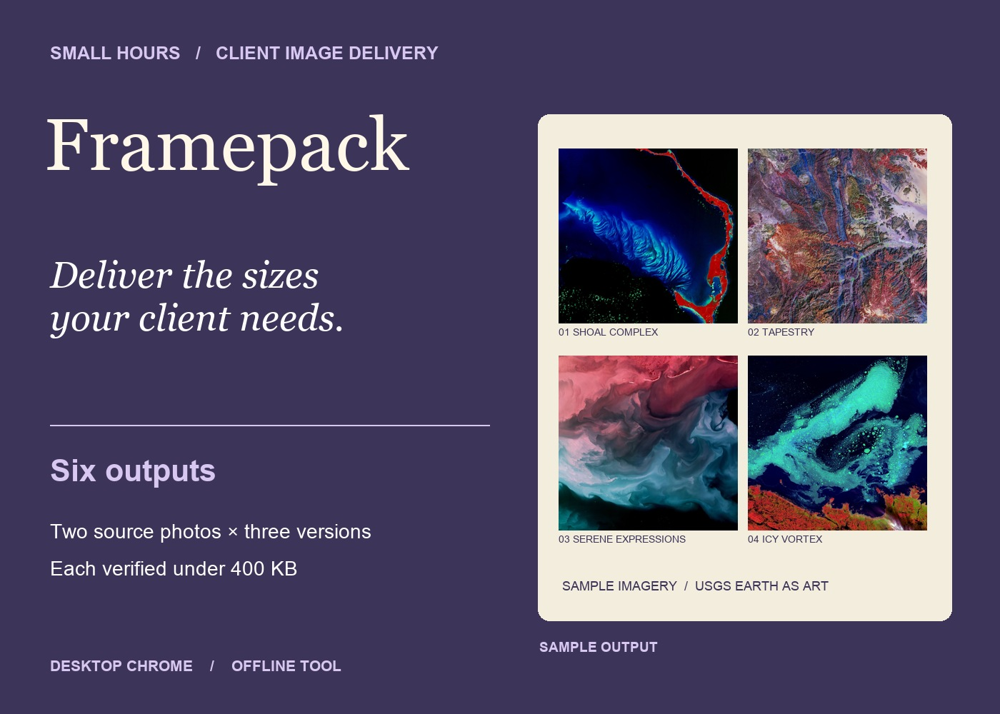

Small Hours / Product demosDeliver six image versions under a size limit

Two source photos became six web, proof and social files. Open the manifest to compare the recorded byte counts with the delivered files.
Inspect sample delivery →
Example from Framepack 0.3.0. All job details and rates are illustrative.
View Framepack on Payhip →